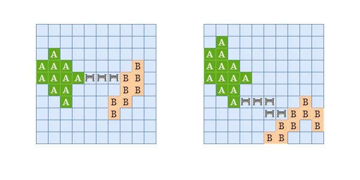
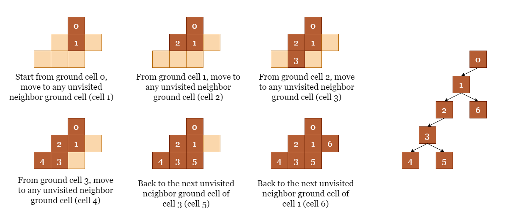
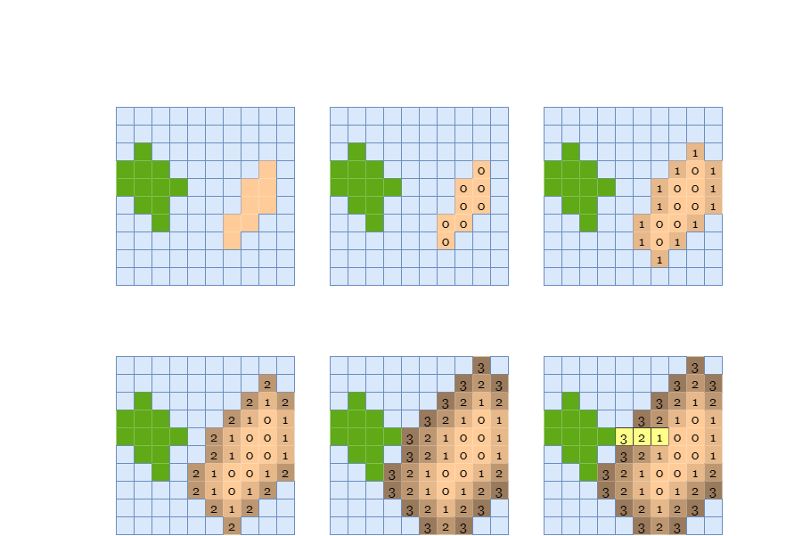
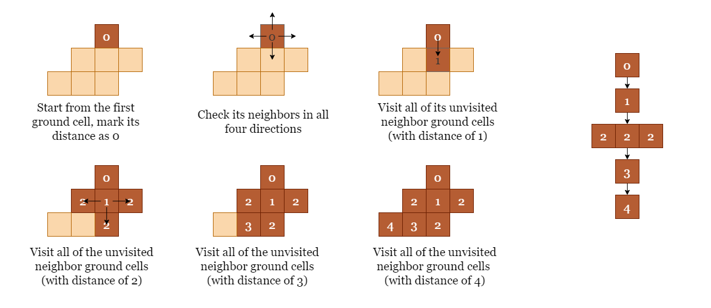

As shown in the examples below, we need to flip at least 3 cells to connect island A
and island B in the left case, and flip at least 5 cells in the right case.

If you are not familiar with the Depth-First-Search (DFS) or the Breadth-First-Search (BFS) algorithms, please refer to our explore cards:
In order to find the minimum number of flips required to reach the destination island, or in other words, the minimum
distance between the two islands, we can use a combination of DFS and BFS algorithms. Start by finding all the land
cells on the first island (let's call it island A) using the DFS method.
Here's how: we start with one cell of island A and try to move to its four neighboring cells. If there
is an unvisited neighboring land cell, we move to that cell and change its value to a number like 2 to
avoid revisiting it again in the future and distinguish it from the land cells of the other island. We then repeat
the same strategy from the new cell. If we find that the current cell has no unvisited neighbors, we will backtrack
to the previous cell and try the next neighboring cell from there. The numbers on the cells in the following figure
represent the order of our visits.

Now that we have found all the cells in island A and set them to 2, in grid we
have:
0 for the water cells.2 for the land cells of the first island (island A)1 for the land cells of the second island (island B)Then, we can use BFS to find the shortest distance from island A to island B. Here is the
step-by-step process for the BFS algorithm:
A as the source, and set distance to
0.
A to a list bfs_queue.bfs_queue is not empty, we build an empty list new_bfs as the candidate cells
for the next BFS round, then we iterate over every cell (x, y) in bfs_queue.
(x, y) (up, down, left, and right). If a valid neighbor has value of
0, we can mark it as visited by setting the value as -1, then we can add this cell to
the list new_bfs. If a neighbor cell has a value of 1, it means that we have found a
land cell of the second island (island B). Since we are traversing water cells in BFS approach, it
means that the first cell of island B we found has the shortest distance from island A
among all cells on island B.
B, it means that we
should look for cells that have a longer distance from island A. Therefore, we increment distance
by 1, set bfs_queue = new_bfs, and repeat step 3.
This approach is shown in the picture below. The distance of each cell from island A is also shown.
A that have a distance of 0.A.A.A.After 3 rounds of BFS search, we find some land cells of island B being the neighbors of water cells
that have a distance of 3 from island A, we can stop the BFS search.

The shortest distance between the two islands is 3, so we need at least 3 flips (highlighted in yellow) to connect them.
Note that in this approach we are directly modifying the input to help us distinguish cells. It is generally not good practice to modify the input, and if the interviewer is against it, you can accomplish the same functionality by using a set to store cells that have already been visited instead.
Iterate over the grid grid until we find a land cell, suppose it is
grid[first_x][first_y].
Start from grid[first_x][first_y] and use depth-first search to find and set the values of all
cells of the same island (island A) to 2.
Create a list bfs_queue and add all cells on island A to it, starting with distance
= 0.
While bfs_queue is not empty, we create another list new_bfs to collect the water
cells we need to visit in the next round. Iterate over cells in bfs_queue, for each cell (x,
y):
grid[x][y] = 1, it means we have reached the second island, return distance.
0), mark them as
-1, and add them to new_bfs.
Once the iteration ends, set bfs_queue = new_bfs, increment distance by 1, and
start the next round by repeating step 4.
Java
class Solution {
private List bfsQueue;
// Recursively check the neighboring land cell of current cell grid[x][y] and add all
// land cells of island A to bfsQueue.
private void dfs(int[][] grid, int x, int y, int n) {
grid[x][y] = 2;
bfsQueue.add(new int[]{x, y});
for (int[] pair : new int[][]{{x + 1, y}, {x - 1, y}, {x, y + 1}, {x, y - 1}}) {
int curX = pair[0], curY = pair[1];
if (0 <= curX && curX < n && 0 <= curY && curY < n && grid[curX][curY] == 1) {
dfs(grid, curX, curY, n);
}
}
}
// Find any land cell, and we treat it as a cell of island A.
public int shortestBridge(int[][] grid) {
int n = grid.length;
int firstX = -1, firstY = -1;
for (int i = 0; i < n; i++) {
for (int j = 0; j < n; j++) {
if (grid[i][j] == 1) {
firstX = i;
firstY = j;
break;
}
}
}
// Add all land cells of island A to bfsQueue.
bfsQueue = new ArrayList<>();
dfs(grid, firstX, firstY, n);
int distance = 0;
while (!bfsQueue.isEmpty()) {
List newBfs = new ArrayList<>();
for (int[] pair : bfsQueue) {
int x = pair[0], y = pair[1];
for (int[] nextPair : new int[][]{{x + 1, y}, {x - 1, y}, {x, y + 1}, {x, y - 1}}) {
int curX = nextPair[0], curY = nextPair[1];
if (0 <= curX && curX < n && 0 <= curY && curY < n) {
if (grid[curX][curY] == 1) {
return distance;
} else if (grid[curX][curY] == 0) {
newBfs.add(nextPair);
grid[curX][curY] = -1;
}
}
}
}
// Once we finish one round without finding land cells of island B, we will
// start the next round on all water cells that are 1 cell further away from
// island A and increment the distance by 1.
bfsQueue = newBfs;
distance++;
}
return distance;
}
}
Python3
class Solution:
def shortestBridge(self, grid: List[List[int]]) -> int:
n = len(grid)
first_x, first_y = -1, -1
# Find any land cell, and we treat it as a cell of island A.
for i in range(n):
for j in range(n):
if grid[i][j] == 1:
first_x, first_y = i, j
break
# Recursively check the neighboring land cell of current cell grid[x][y] and add all
# land cells of island A to bfs_queue.
def dfs(x, y):
grid[x][y] = 2
bfs_queue.append((x, y))
for cur_x, cur_y in [(x + 1, y), (x - 1, y), (x, y + 1), (x, y - 1)]:
if 0 <= cur_x < n and 0 <= cur_y < n and grid[cur_x][cur_y] == 1:
dfs(cur_x, cur_y)
# Add all land cells of island A to bfs_queue.
bfs_queue = []
dfs(first_x, first_y)
distance = 0
while bfs_queue:
new_bfs = []
for x, y in bfs_queue:
for cur_x, cur_y in [(x + 1, y), (x - 1, y), (x, y + 1), (x, y - 1)]:
if 0 <= cur_x < n and 0 <= cur_y < n:
if grid[cur_x][cur_y] == 1:
return distance
elif grid[cur_x][cur_y] == 0:
new_bfs.append((cur_x, cur_y))
grid[cur_x][cur_y] = -1
# Once we finish one round without finding land cells of island B, we will
# start the next round on all water cells that are 1 cell further away from
# island A and increment the distance by 1.
bfs_queue = new_bfs
distance += 1
Let n×nn \times n be the size of the input matrix grid.
Time complexity: O(n2)O(n^2)
The general time complexity of Depth-First-Search is O(V+E)O(V + E), where VV stands for the number of vertices. The maximum number of cells in the first island is n2n^2, so iterating over its cells will take O(n2)O(n^2) time. EE is a constant here since we are only allowed to traverse in up to 4 directions.
The general time complexity of Breadth-First-Search is O(V+E)O(V + E), where VV stands for the number of vertices. The maximum number of water cells we need to check before reaching the second island is n2n^2, which will take O(n2)O(n^2) time.
Space complexity: O(n2)O(n^2)
The general space complexity of Depth-First-Search is O(V)O(V), where VV stands for the number of vertices. The maximum number of cells in the first island is O2O^2, thus the space used by the recursive stack during DFS is O(n2)O(n^2)
The general space complexity of Breadth-First-Search is O(V)O(V), where VV stands for the number of vertices. The maximum number of water cells we need to check using BFS before reaching the second island is n2n^2, thus the space used by the queue is O(n2)O(n^2).
To sum up, the overall space complexity is O(n2)O(n^2)
In this approach, we will use the same strategy as in the previous approach, but we will use BFS instead of DFS to
search for all cells of island A. Again, we will first traverse grid, take the first land
found (assume it is grid[first_x][first_y]) and treat it as a land cell of Island A. Then,
we BFS over all cells of island A and set their values to 2 to distinguish them from the
other island.

Iterate over the grid until we find the first land cell, suppose it is grid[first_x][first_y].
Create:
bfs_queue and add grid[first_x][first_y] on island A to
it.
new_bfs for the next round's search.second_bfs_queue for searching the distance between two islands later.Iterate over bfs_queue, for each cell grid[x][y], if grid[x][y] = 1:
grid[x][y] = 2(x, y) to new_bfs for the next round's search.(x, y) to second_bfs_queue for searching over water cells later.If new_bfs is not empty, we set bfs_queue = new_bfs and repeat step 3. Otherwise,
move on to step 5.
Set distance = 0.
Now we start BFS on water cells. While second_bfs_queue is not empty, we create an empty list
new_bfs to collect the cells we need to visit in the next round. Iterate over cells in second_bfs_queue,
for each cell (x, y):
grid[x][y] = 1, it means we have reached the second island, return distance.
0), mark them as
-1 and add them to new_bfs.
Once the iteration ends, set second_bfs_queue = new_bfs, increment distance by 1,
and repeat the step 4.
Java
class Solution {
public int shortestBridge(int[][] grid) {
int n = grid.length;
int firstX = -1, firstY = -1;
// Find any land cell, and we treat it as a cell of island A.
for (int i = 0; i < n; i++) {
for (int j = 0; j < n; j++) {
if (grid[i][j] == 1) {
firstX = i;
firstY = j;
break;
}
}
}
// bfsQueue for BFS on land cells of island A; secondBfsQueue for BFS on water cells.
List bfsQueue = new ArrayList<>();
List secondBfsQueue = new ArrayList<>();
bfsQueue.add(new int[]{firstX, firstY});
secondBfsQueue.add(new int[]{firstX, firstY});
grid[firstX][firstY] = 2;
// BFS for all land cells of island A and add them to secondBfsQueue.
while (!bfsQueue.isEmpty()) {
List newBfs = new ArrayList<>();
for (int[] cell : bfsQueue) {
int x = cell[0];
int y = cell[1];
for (int[] next : new int[][]{{x + 1, y}, {x - 1, y}, {x, y + 1}, {x, y - 1}}) {
int curX = next[0];
int curY = next[1];
if (curX >= 0 && curX < n && curY >= 0 && curY < n && grid[curX][curY] == 1) {
newBfs.add(new int[]{curX, curY});
secondBfsQueue.add(new int[]{curX, curY});
grid[curX][curY] = 2;
}
}
}
bfsQueue = newBfs;
}
int distance = 0;
while (!secondBfsQueue.isEmpty()) {
List newBfs = new ArrayList<>();
for (int[] cell : secondBfsQueue) {
int x = cell[0];
int y = cell[1];
for (int[] next : new int[][]{{x + 1, y}, {x - 1, y}, {x, y + 1}, {x, y - 1}}) {
int curX = next[0];
int curY = next[1];
if (curX >= 0 && curX < n && curY >= 0 && curY < n) {
if (grid[curX][curY] == 1) {
return distance;
} else if (grid[curX][curY] == 0) {
newBfs.add(new int[]{curX, curY});
grid[curX][curY] = -1;
}
}
}
}
// Once we finish one round without finding land cells of island B, we will
// start the next round on all water cells that are 1 cell further away from
// island A and increment the distance by 1.
secondBfsQueue = newBfs;
distance++;
}
return distance;
}
}
Python3
class Solution:
def shortestBridge(self, grid: List[List[int]]) -> int:
n = len(grid)
first_x, first_y = -1, -1
# Find any land cell, and we treat it as a cell of island A.
for i in range(n):
for j in range(n):
if grid[i][j] == 1:
first_x, first_y = i, j
break
# bfsQueue for BFS on land cells of island A; secondBfsQueue for BFS on water cells.
bfs_queue = [(first_x, first_y)]
second_bfs_queue = [(first_x, first_y)]
grid[first_x][first_y] = 2
# BFS for all land cells of island A and add them to second_bfs_queue.
while bfs_queue:
new_bfs = []
for x, y in bfs_queue:
for cur_x, cur_y in [(x + 1, y), (x - 1, y), (x, y + 1), (x, y - 1)]:
if 0 <= cur_x < n and 0 <= cur_y < n and grid[cur_x][cur_y] == 1:
new_bfs.append((cur_x, cur_y))
second_bfs_queue.append((cur_x, cur_y))
grid[cur_x][cur_y] = 2
bfs_queue = new_bfs
distance = 0
while second_bfs_queue:
new_bfs = []
for x, y in second_bfs_queue:
for cur_x, cur_y in [(x + 1, y), (x - 1, y), (x, y + 1), (x, y - 1)]:
if 0 <= cur_x < n and 0 <= cur_y < n:
if grid[cur_x][cur_y] == 1:
return distance
elif grid[cur_x][cur_y] == 0:
new_bfs.append((cur_x, cur_y))
grid[cur_x][cur_y] = -1
# Once we finish one round without finding land cells of island B, we will
# start the next round on all water cells that are 1 cell further away from
# island A and increment the distance by 1.
second_bfs_queue = new_bfs
distance += 1
Let n×nn \times n be the size of the input matrix grid.
Time complexity: O(n2)O(n^2)
A we need
to check are n2n^2,
which will take O(n2)O(n^2) time.
Space complexity: O(n2)O(n^2)
A that we need to check with BFS is n2n^2,
thus the space used by bfs_queue is O(n2)O(n^2).
second_bfs_queue is also O(n2)O(n^2).